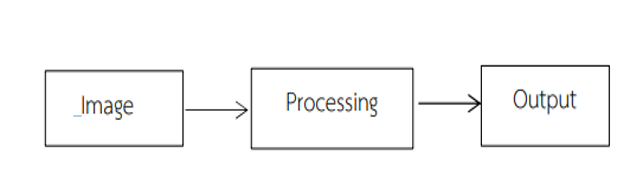
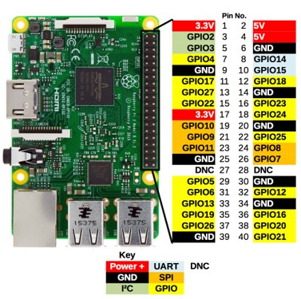

1. เพื่อศึกษาการอ่านโน้ตด้วยเทคนิคการประมวลผลภาพ
2. เพื่อสืบสานวัฒนธรรมไทยด้านเพลงดนตรีไทย
3. เพื่อบูรณาการเทคโนโลยีหุ่นยนต์กับศิลปวัฒนธรรมไทย
4. เพื่อสร้างและทดสอบหุ่นยนต์เป่าขลุ่ยเพียงอออัตโนมัติ
| ทฤษฎีเรื่อง | เนื้อหา | รูป |
|---|---|---|
| โขน (Khon) | เป็นศิลปะการแสดงชั้นสูงของไทยที่มีความสง่างาม อลังการและอ่อนช้อย การแสดงประเภทหนึ่งที่ใช้ท่ารำตาม แบบละครใน | |
| การประมวลผลภาพ | เป็นการนำภาพมาประมวลผลหรือคำนวณด้วยเครื่องคอมพิวเตอร์เพื่อให้ได้ข้อมูลที่เราต้องการทั้งในเชิงปริมาณและในเชิงคุณภาพเพื่อนำภาพวัตถุที่ได้ไปวิเคราะห์หาข้อมูลเชิงปริมาณ เช่น ขนาด รูปร่าง และทิศทางการเคลื่อนของวัตถุในภาพ คอมพิวเตอร์มีความสามารถในการคำนวณและประมวลผลข้อมูลจำนวนมหาศาลได้ในระยะเวลาอันสั้น |  |
| ราสเบอร์รี่พาย | เป็นคอมพิวเตอร์ขนาดเล็ก สามารถทำความเข้าใจและสร้างโลกดิจิทัลเพิ่มขึ้นได้โดยง่าย สามารถแก้ปัญหาต่าง ๆ ที่สำคัญได้และเตรียมพร้อมสำหรับงานในอนาคต ซึ่ง เป็นคอมพิวเตอร์ที่มีประสิทธิภาพสูง ราคาประหยัด |  |
| Servomotor | เซอร์โวมอเตอร์ (Servo Motor) คือ มอเตอร์ไฟฟ้ากระแสตรงที่มักถูกนำมาใช้ในการควบคุมมุมหรือตำแหน่งเชิงเส้นที่มีความละเอียดสูง | |
1. หุ่นยนต์เป่าขลุ่ยเพียงอออัตโนมัติด้วยเทคนิคการประมวลผลภาพ
2.สามารถตีพิมพ์เผยแพร่เป็นบทความวิชาการได้
1. สืบสานวัฒนธรรมไทยด้านการเล่นดนตรีไทย
2. บูรณาการเทคโนโลยีหุ่นยนต์กับศิลปวัฒนธรรมไทยได้

สาขาวิชาเทคโนโลยีอิเล็กทรอนิกส์และคอมพิวเตอร์
คณะเทคโนโลยีอุตสาหกรรม มหาวิทยาลัยราชภัฏพระนคร
ข้อมูลติดต่อ
right_click
arrow_right_alt
facebook
arrow_right_alt
คณะเทคโนโลยีอุตสาหกรรม
arrow_right_alt
มหาวิทยาลัยราชภัฏพระนคร